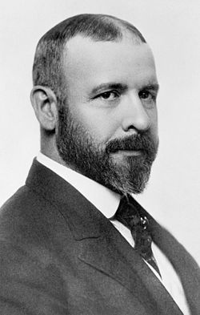
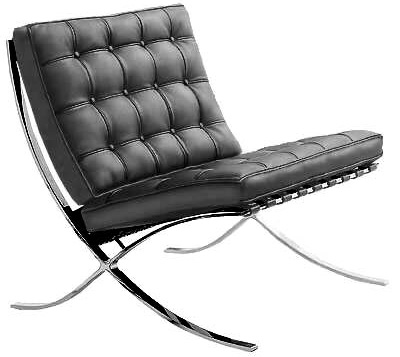

Forma y Función
It is the pervading law of all things organic and inorganic, of
all things physical and metaphysical,of all things human and all things superhuman —of all true manifestations of the head, of the heart, of the soul— that the life is recognizable in its expression, that form ever follows function. This is the law.
– Louis Sullivan, “The Tall Office Building Artistically Considered”

Para el arquitecto Louis Sullivan, admirador de los pensadores racionalistas norteamericanos como Thoreau, Emerson, Whitman y Melville, existía un sólo credo estético, con una regla simple “que no permite excepciones”, la “forma siempre sigue a la función”.
Sullivan desarrolló el concepto de rascacielos con estructura de acero en el Chicago de fines del siglo XIX. Las fuerzas de la economía y la tecnología convergían en ese momento y había que diseñar algo nuevo, fuera de los antiguos patrones escritos en viejos libros de arquitectura. Para Sullivan si algo tenía que determinar la forma, esto sería el propósito del edificio. La propuesta de Sullivan es que la “forma sigue la función, versus el anterior credo de que “la forma sigue al precedente”. Hasta ese tiempo, la arquitectura se basaba en el principio de que la arquitectura debía re utilizar las grandes formas de la antigüedad.
Esto llevó a los arquitectos a buscar estilos arquitectónicos que no fueran influenciados por la historia. La idea era expresar la verdadera forma del edificio siguiendo un estricto apego a su funcionalidad. Al grado de llegar a rechazar todo ornamento arquitectónico, reflejado en el ensayo de Adolf Loos: “ornamento y crimen”.
Estos conceptos, llevaron al surgimiento de los movimientos modernistas en arquitectura.
Loos proclamaba que la evolución de la cultura, el progreso, busca la eliminación del ornamento en los objetos útiles. El ornamento provoca que los objetos pierdan estilo, y por lo tanto se vuelven obsoletos. Por esto que perder esfuerzo en el ornamento de un objeto es un crimen, pues llevará al objeto a su obsolescencia. Los objetos útiles deben ser simples, sin ornamentos, es la finalidad de esta propuesta.
Es muy interesante estudiar las discusiones y propuestas del diseño y la arquitectura de fines del siglo XIX y principios del siglo XX, porque pueden ser ilustrativas para el desarrollo de la arquitectura de software en particular.
Aunque he sostenido que desarrollar software no es construir software, en el sentido de que no se deben aplicar directamente las analogías de construcción de edificios con el desarrollo de sistemas, es innegable que el software requiere de un diseño previo.
Veamos que pasa si adoptamos una definición de arquitectura de software acorde con estos conceptos de forma y función. Definamos por ahora que de lo que trata la arquitectura de software es del estudio de la forma y función de un sistema.
Forma, es lo que el sistema es, función es lo que el sistema hace. ¿Pero cómo lo hace? Cuando tratamos de entender cómo el sistema hace lo que debe hacer, es que entramos a discutir sobre la estructura. La estructura es el soporte a la forma, y la forma, como nos recuerda Sullivan, sigue a la función.

Si les pido diseñar una silla, la forma está dada inmediatamente por la función, que es permitir descansar el cuerpo de cierta forma precia. No se puede hacer una silla totalmente vertical, pues queremos mantener a la persona en cierta posición específica. Sin embargo, es relevante preguntarse cómo esta silla sostendrá el peso, de que materiales debe estar construida, cuáles son las fuerzas a la que se verán sometidos los materiales, cual deberá ser la duración, cuanta gente podrá usar potencialmente la silla, por cuanto tiempo, etc.
Lo mismo pasaría con un sistema informático. La función es lo primero que debemos definir: Qué hace el sistema, a qué responde, para qué lo hacemos. De esto sale la forma, y definida la forma debemos desarrollar la mejor estructura que lo soporte.
Veamos las consecuencias de esto con un ejemplo práctico:
Queremos desarrollar un sistema que permita a las personas indicar donde están y qué están haciendo en cada momento. Para esto los usuarios ingresarán su “Estado”, que corresponde a un mensaje breve que indica qué está haciendo en cada momento relevante. La idea es que otros puedan saber donde está y que está haciendo, pues es útil para coordinar las tareas de un equipo. Para indicar su estado las personas no necesariamente deberán tener acceso a un computador. Esa es la función.
Para cumplir esta función, permitiremos que los usuarios envíen sus mensajes de estado a un sitio central, y permitiremos que cualquiera pueda observar una linea de tiempo con los estados de cada uno de los participantes del sistema. Las personas que usen este sistema podrán elegir a quienes seguir, y podrán saber quienes les siguen. Esta es la forma.
Y acá viene la discusión interesante de la arquitectura. Como queremos acceso desde cualquier parte, permitiremos que los mensajes sean enviados vía SMS, esto produce una limitación al mensaje de estado, que para ser compatible con todos los sistemas de mensajería por celular de la época, implica que el estado estará limitado a 140 caracteres.
Usaremos un sitio web para consultar la linea de tiempo de los demás participantes, y para elaborar nuestras listas de usuarios que nos interesa seguir, junto con consultar el estado de nuestros seguidores.
Con todo esto, podemos construir este sitio usando Ruby On Rails, en poco tiempo, y podemos disponibilizarlo en la web. Lo llamaremos Twitter.
Acá viene la diferencia fundamental con la arquitectura tradicional, esa que se encuentra limitada por la fuerza de la gravedad. Porque Twitter empieza a popularizarse, y empieza a ser usado para más que la función inicial. Decimos que Twitter, el sistema, evoluciona, y requiere adaptarse a los nuevos requerimientos, que surgen dinámicamente, porque el software permite una mayor maleabilidad.
Hoy Twitter es una herramienta que cumple funciones diferentes a las soñadas por sus creadores. Su arquitectura actual no es la misma que la que tenía cuando inició. Seguramente en este momento hay una gran preocupación en el equipo sobre la seguridad de las cuentas de twitter, ya hemos visto como la apropiación indebida de una cuenta en twitter provocó una caída en la bolsa del índice Dow Jones. La arquitectura debe hacerse cargo de esos aspectos también.
Lo que empezó con Ruby On Rails y MySQL, ahora es una combinación de muchos frameworks, lenguajes (ruby, scala y java principalmente) y de bases de datos (relacionales y NoSQL). Soportando plataformas móviles y toda clase de clientes y soportando miles de aplicaciones que aprovechan su API.
Decimos que la arquitectura de Twitter ha evolucionado, y efectivamente de eso se trata, de evolución permanente, es la gran diferencia que la arquitectura de software presenta frente a la arquitectura tradicional.
Así que nuestra definición de arquitectura debe cambiar. La arquitectura de software tiene que ver con la forma y la función de los sistemas, y con la evolución de los mismos. Es por eso que decimos que desarrollamos software y no que lo construimos, para dar cuenta de la naturaleza dinámica de nuestras arquitecturas.